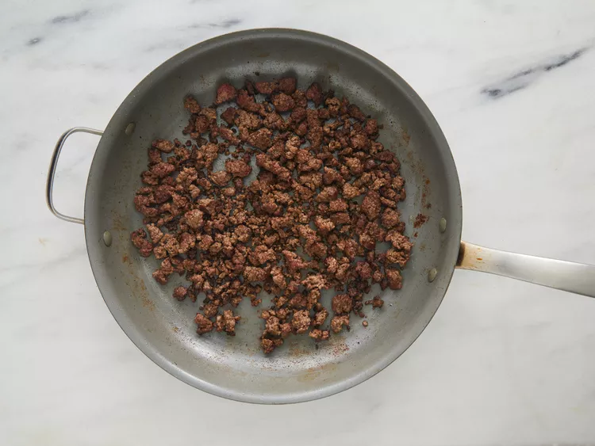
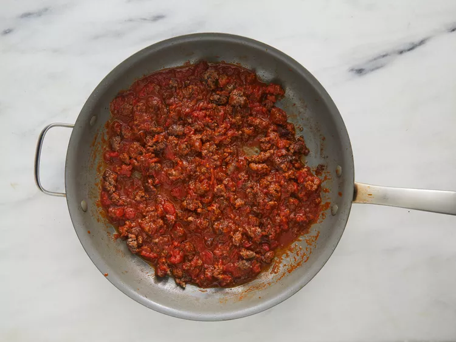
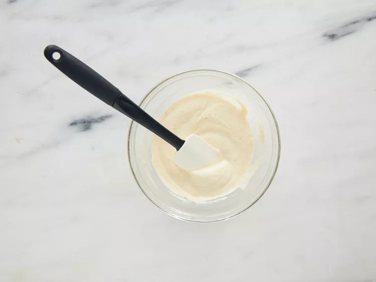
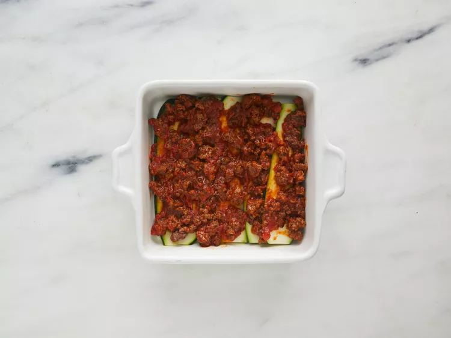
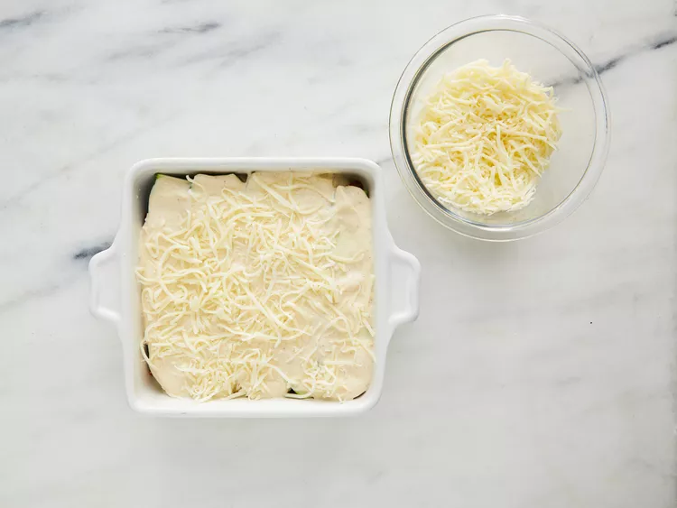
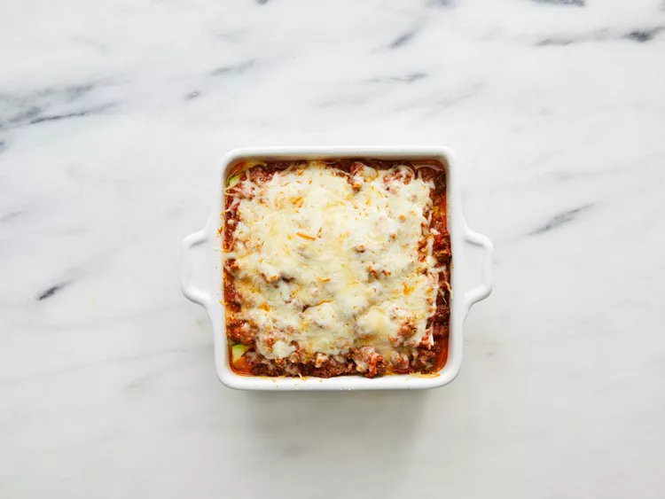

Ultimate Low-Carb Zucchini Lasagna

Description
Ultimate Low-Carb Zucchini Lasagna is a delicious version of the classic Italian lasagna, designed for those looking to reduce their carbohydrate intake
without sacrificing flavor. Instead of traditional pasta sheets, this recipe uses thin slices of zucchini as a substitute, which are baked until tender
and lightly caramelized. The filling combines ground beef seasoned with Italian herbs, a rich tomato sauce and a creamy blend of cheeses such as ricotta
and mozzarella, offering an indulgent texture and flavor that mimics conventional lasagna.
The result is a satisfying dish that preserves the essence of traditional lasagna while conforming to a low-carb profile. The zucchini not only contributes
a light texture, but also absorbs the flavors of the sauce and cheese well, creating a balanced and delicious culinary experience. Ideal for those following
a ketogenic or low-carb diet, this zucchini lasagna is an excellent choice for enjoying comfort food without compromising health and nutrition goals.
Ingredients
- cooking spray
- 1 1/2 large zucchinis, thinly sliced lengthwise
- 1 tablespoon olive oil
- 1 pound ground beef
- 1 1/2 cups low-carb marinara sauce
- 2 teaspoons salt, divided
- 1 teaspoon dried oregano
- 1/2 teaspoon ground black pepper
- 1 (8 ounce) container ricotta cheese
- 1 large egg
- 1/2 teaspoon ground nutmeg
- 2 cups shredded mozzarella cheese
- 1/4 cup grated Parmesan cheese
- aluminum foil
Steps
- Preheat the oven to 375 degrees F (190 degrees C). Grease an 8-inch square baking dish with cooking spray.
- Pat dry zucchini slices with a paper towel to remove excess moisture. Set aside.
- PHeat olive oil in a saucepan over medium-high heat. Add ground beef; cook until browned, 5 to 8 minutes.

- Add marinara sauce, 1 teaspoon salt, oregano, and pepper; simmer for 10 minutes. Set aside.

- Combine ricotta cheese, egg, 1 teaspoon salt, and nutmeg in a bowl; mix well. Set aside.

- Arrange one layer of zucchini slices in the prepared baking dish. Cover with 1/2 of the sauce. Add another layer of zucchini slices. Spread ricotta
mixture on top. Sprinkle with 1/2 of the mozzarella cheese. Add another layer of zucchini slices; cover with remaining sauce and top with remaining
mozzarella cheese and Parmesan cheese. Cover the baking dish with aluminum foil.


- Bake in the preheated oven for 30 minutes. Remove aluminum foil and bake until top is golden, about 15 minutes more.

This would be all for this recipe, by clicking the following you return to the main page